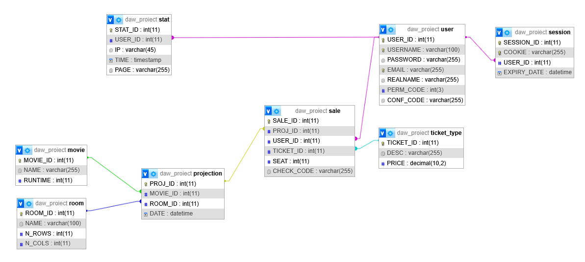

Proiect la DAW
Spiridon Mihnea-Andrei
Rezumat
Proiectul abordează tema 11 din lista temelor propuse, anume Teatru/operă/cinematograf. În particular, propun implementarea unei aplicații de tip Cinema City, care permite clienților unui cinematograf să cumpere bilete și să acceseze o bază de date cu filme, iar personalului administrator să gestioneze sălile, filmele, proiecțiile etc.
Arhitectură
Componentele principale ale aplicației sunt utilizatorul și proiecția. Despre utilizatorii aplicației spunem următoarele:
- Sunt de patru tipuri, anume vizitatori, nevalidați, obișnuiți și administratori.
- Un vizitator parcurge procesul de înregistrare pentru a-și creea un cont, devenind utilizator nevalidat.
- Un utilizator nevalidat parcurge procesul de validare, ce implică verificarea adresei de email înscrisă în timpul procesului de înregistrare, pentru a deveni utilizator obișnuit.
- Orice utilizator poate parcurge procesul de achiziționare bilet în care acesta selectează o dată, o proiecție din acea dată, un loc și în cele din urmă un tip de bilet, în această ordine.
- Toți utilizatorii cu cont, adică nu vizitatorii, pot parcurge procesul de autentificare pentru a intra în cont.
- În urma procesului de autentificare, utilizatorul cu cont începe o sesiune de 24 de ore, timp în care aplicația nu va solicita încă o dată procesului de autentificare, dacă cookie-ul aferent sesiunii nu este șters manual.
- Utilizatorii cu cont pot modifica datele personale trecute în acesta, precum numele real, numele de utilizator sau adresa de email, dar numai utilizatorii obișnuiți și administratorii pot vedea în contul lor lista cu biletele achiziționate și pot cere o anulare a biletului. Cu alte cuvinte, utilizatorii nevalidați nu au acest drept.
- Un administrator poate face o cerere prin care se aduc în baza de date informații despre filme din IMDb și poate solicita diverse rapoarte de activitate care se generează într-un format potrivit, de exemplu ca fișier PDF.
- Vizitatorul este reprezentat prin NULL în baza de date, iar restul utilizatorilor au asociat un ID unic.
- Un utilizator nu poate deveni, prin interacțiunea cu aplicația, administrator.
Despre proiecții spunem următoarele:
- Sunt entitatea care reprezintă o ecranizare particulară a unui film în cadrul cinematografului nostru, la o anumită oră și într-una dintre sălile cinematografului.
- Proiecția trebuie să fie, conform descrierii de mai sus, în relație de tip many-to-one cu entitatea care reprezintă filmul și cu entitatea care reprezintă sala.
- Pentru proiecții se emit bilete pe anumite locuri, conform și până în capacitatea sălii asociate acesteia. Așadar avem o relație one-to-many între proiecție și entitatea care reprezintă vânzarea unui bilet.
- Pentru fiecare vânzare de bilet avem asociat un tip de bilet și un utilizator. Așadar avem o relație many-to-one cu entitatea care reprezintă utilizatorul și o relație many-to-one cu entitatea care reprezintă tipul de bilet.
- Biletele se trimit în momentul achiziției, o singură dată, pe email. Pentru utilizatorii validați, ele pot fi văzute în continuare și gestionate din cont.
În baza de date a aplicației vom avea, printre altele, tabele care reprezintă aceste entități. Diagrama conceptuală a bazei de date, reprezentată de utilitarul phpMyAdmin, este:

Tabelele sunt după cum urmează:
- MOVIE, reprezentând filmul și memorând date despre acesta.
- ROOM, reprezentând sala de cinematograf și memorând date despre aceasta, în mod notabil structura acesteia ca număr de linii și număr de coloane.
- PROJECTION, reprezentând proiecția, conform descrierii de mai sus.
- USER, reprezentând utilizatorul. De menționat este că parola nu se memorează în clar. Atributele al căror nume nu sugerează automat conținutul lor sunt:
- PERM_CODE, un întreg reprezentând permisiunile utilizatorului, reprezentate ca biți diferiți ai unui întreg, unde obținerea de coduri se face prin OR binar, iar testarea permisiunilor se face prin AND binar. Sunt necesari pentru funcționarea aplicației doar 2 biți. Implementarea rezervă în total 7 biți prin INT(3).
- CONF_CODE, un șir de caractere în care este stocat codul de confirmare cu care trebuie un utilizator nevalidat să acceseze pagina de validare, ca parte a procesului de validare, pentru a deveni utilizator obișnuit. Este NULL pentru toți ceilalți utilizatori.
- SESSION, unde este stocat un COOKIE securizat criptografic aferent unei sesiuni deschise de un utilizator, cu un anumit moment de expirare.
- STAT, reprezentând o accesare a aplicației web, pe o anumită pagină, la un anumit moment, printr-un anumit IP, și eventual de către un anumit USER. Acest tabel este folosit în scop statistic.
- TICKET_TYPE, unde sunt memorate tipurile de bilete disponibile, de exemplu biletul de adult, student sau pensionar, fiecare putând avea un preț diferit în funcție de tipul lor.
- SALE, reprezentând vânzarea unui anumit tip de bilet pentru un anumit loc în cinematograf pentru o proiecție dată.
- CHECK_CODE reprezintă un cod de validare a biletului care va fi înscris pe codul QR pentru verificare la scanarea fizică, în cinematograf.
Tabelele sunt în FN3, dacă admitem că între PERM_CODE și CONF_CODE din USER nu avem dependență. Deși momentan avem CONF_CODE doar pentru utilizatori nevalidați, cu PERM_CODE = 0, menținem câmpul în tabel pentru extindere. De exemplu, dacă am introduce categoria de moderator, o persoană de încredere cu dreptul de a adăuga filme în baza de date, dar nu de a șterge proiecții, putem refolosi CONF_CODE pentru reconfirmare sau acceptare a invitației în procesul de promovare la moderator.
În teorie relația dintre USER și SESSION este one-to-many, iar implementarea nu prespune în niciun moment existența unei relații one-to-one. Pot exista simultan în baza de date mai multe cookie-uri, chiar și expirate, pentru un același utilizator. Însă, în practică vom regăsi în baza de date cel mult un cookie pentru fiecare utilizator. Acest lucru nu vine ca urmare a unui trigger sau constrângere la nivelul bazei de date, ci este o consecință a implementării, care face o cerere de revocare a tuturor cookie-urilor deja existente înainte de emiterea unui cookie nou. Un efect secundar dorit este imposibilitatea de a folosi același cont simultan de pe două dispozitive.
Implementare
Putem descrie modul în care interacționează un utilizator cu aplicația prin intermediul diagramelor UML.